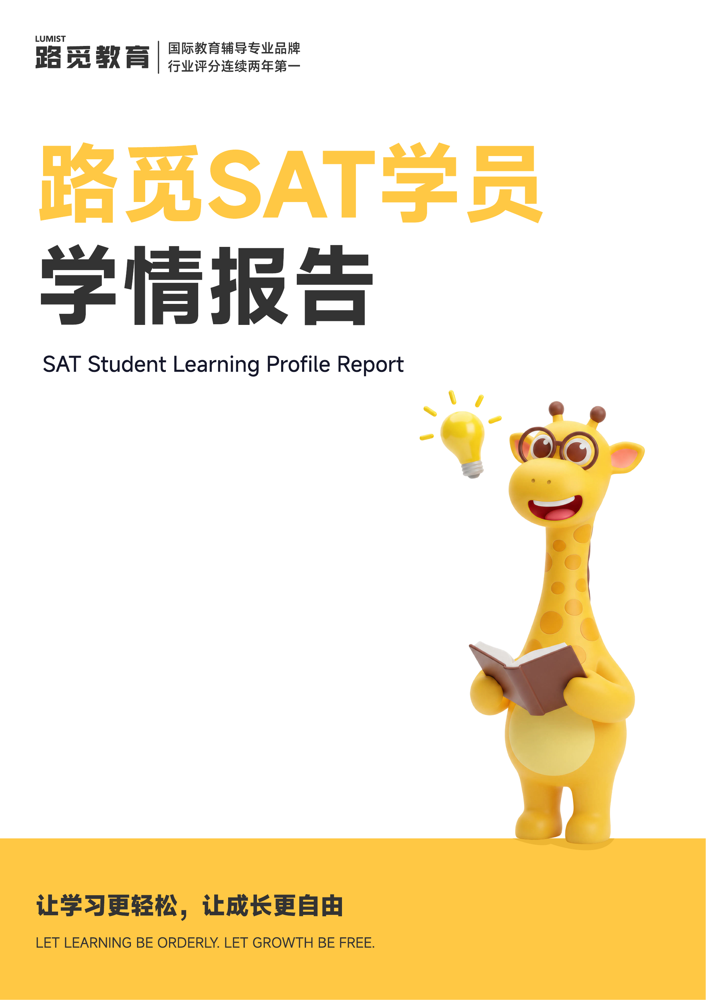
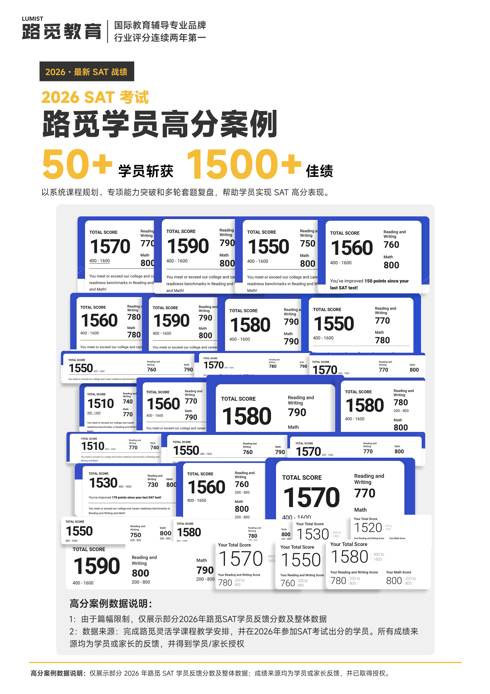
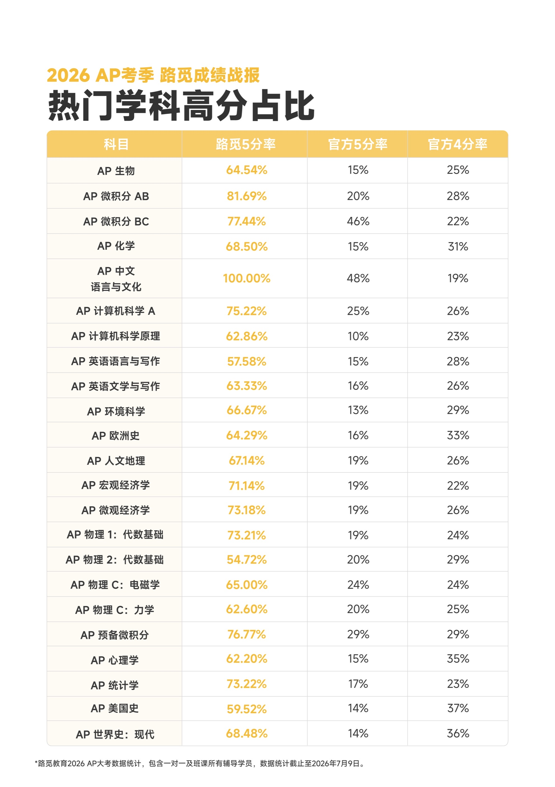
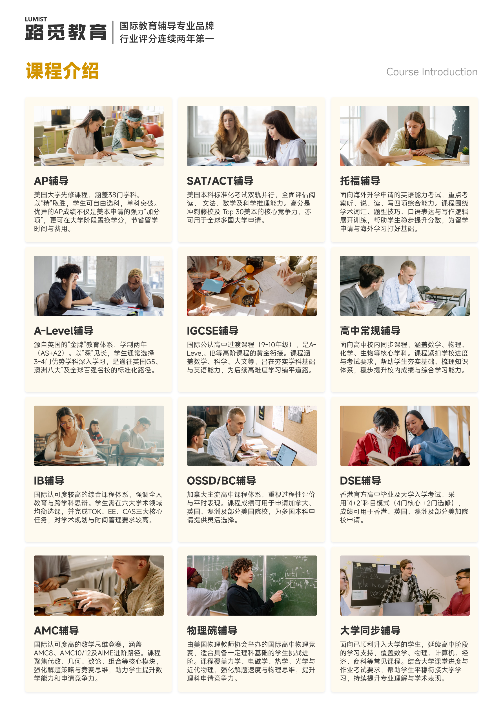
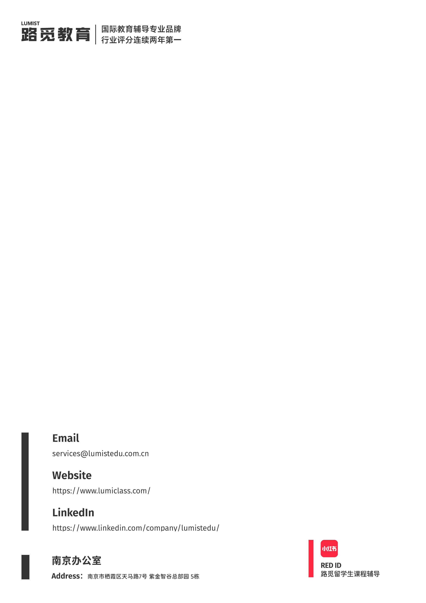

试听学情
试听学情与学习建议
学生姓名
任课教师
课程科目
校内进度
近期任务
备考目标
本次已确认
后续待观察
本节课内容与观察证据
试听内容
SAT 数学试听
报告管理

试听内容
建议总计 30 小时。以下按每 1 小时拆分；如学生在套题中已稳定掌握某一模块，对应课时将替换为真实失分点复盘。
| 课时 | 本小时主题 | 课堂训练 | 当小时目标 |
|---|---|---|---|
| 01h | SAT 框架与首套题诊断 | 四大模块、Bluebook 操作、诊断题 | 建立知识图谱与考试流程 |
| 02h | 核心代数查漏 | 方程、方程组、不等式 | 定位代数概念缺口 |
| 03h | 函数与图像 | 函数表示、交点、表格 | 熟悉函数题的建模路径 |
| 04h | 高阶数学 I | 二次函数、多项式、零点 | 提升复杂代数题处理能力 |
| 05h | 高阶数学 II | 指数函数、非线性函数、含参题 | 掌握图像验证策略 |
| 06h | 数据分析与概率 I | 百分比、比率、单位换算 | 恢复常用应用题模型 |
| 07h | 数据分析与概率 II | 条件概率、抽样推断、统计量 | 建立概率与数据题框架 |
| 08h | 几何 I：角度与平行线 | 角度关系、平行线、三角形 | 恢复基础图形关系 |
| 09h | 几何 II：全等与相似 | 比例、面积比、体积比 | 掌握相似模型的识别 |
| 10h | 几何 III：特殊三角形 | 30-60-90、45-45-90、勾股 | 提高典型模型反应速度 |
| 课时 | 本小时主题 | 课堂训练 | 当小时目标 |
|---|---|---|---|
| 11h | 几何 IV：圆与弧 | 圆心角、圆周角、切线、弧长 | 恢复圆相关定理与应用 |
| 12h | 几何 V：坐标几何 | 距离、中点、斜率、圆方程 | 建立坐标图形解题路径 |
| 13h | 几何 VI：三角比 | 正弦、余弦、正切、弧度 | 解决三角函数基础遗忘 |
| 14h | 几何 VII：综合题 | 几何与代数、函数、比例结合 | 训练跨模块信息提取 |
| 15h | Desmos I：基础工具 | 方程、交点、表格、滑块 | 建立工具使用边界 |
| 16h | Desmos II：提速策略 | 回归、限制定义域、参数探索 | 形成手算/代入/工具选择清单 |
| 17h | 套题复盘 I：错因定位 | 首套完整 Report、错题重做 | 形成第一版个人错题清单 |
| 18h | 套题复盘 I：超时题 | 逐题用时、跳题、回查 | 定位真实时间损耗点 |
| 19h | 薄弱点动态补强 | 根据首轮错因安排小专题 | 消除重复性失分 |
| 20h | 限时重测 | 同类题限时训练与复盘 | 验证专项补强效果 |
| 课时 | 本小时主题 | 课堂训练 | 当小时目标 |
|---|---|---|---|
| 21h | 套题复盘 II：Module 1 | 准确率、用时、题型分布 | 稳定基础模块完成质量 |
| 22h | 套题复盘 II：Module 2 | 难题、跳题、时间止损 | 提升高难模块策略 |
| 23h | Module 2 Hard I | 复杂建模、含参代数 | 训练 750+ 难题能力 |
| 24h | Module 2 Hard II | 综合几何与 Desmos 实战 | 缩短复杂题计算路径 |
| 25h | 套题复盘 III：重复错因 | 追踪高频错误与超时题 | 建立个人避坑清单 |
| 26h | 高频薄弱点重测 | 小专题限时重测 | 确认薄弱点已闭环 |
| 27h | 最终完整模考 | 全流程限时完成 | 确认稳定分数区间 |
| 28h | 最终模考复盘 | 最后错题、用时与策略 | 完成个人考场策略 |
| 29h | 考前清单整理 | 错题、Desmos、公式与节奏 | 形成可执行 Checklist |
| 30h | 考前闭环与答疑 | 重点问题回顾、心态与流程 | 以稳定状态进入考试 |



